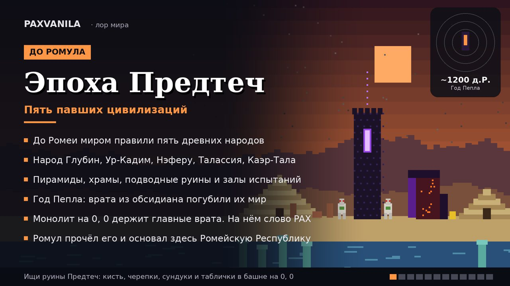
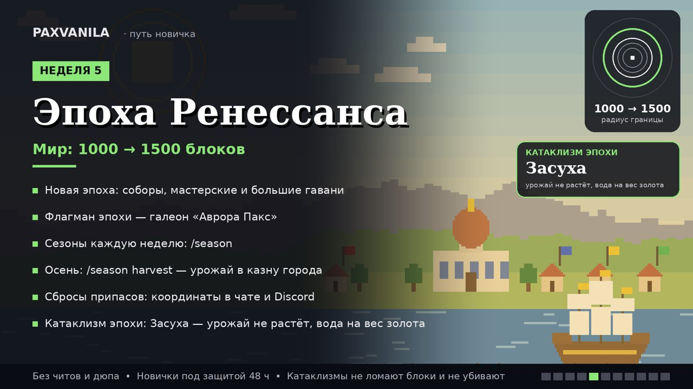
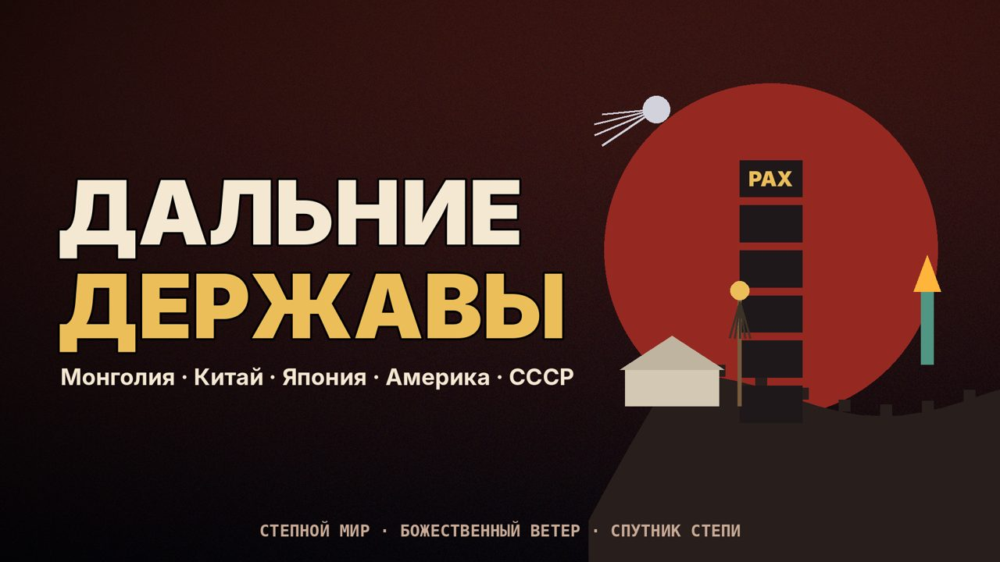
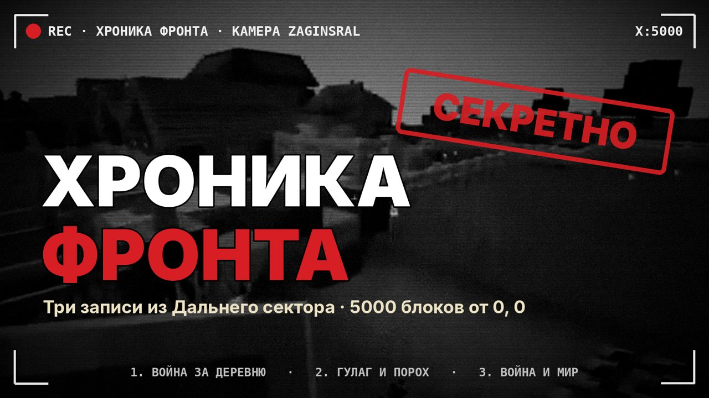
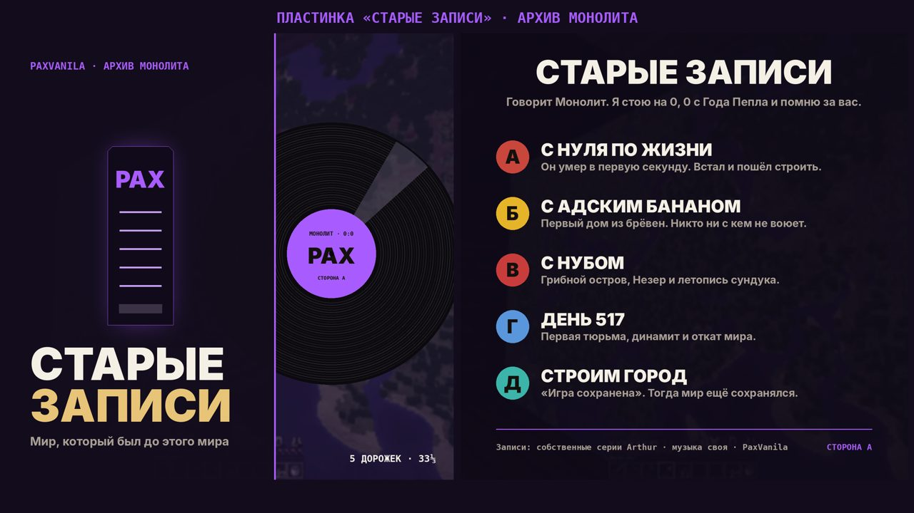
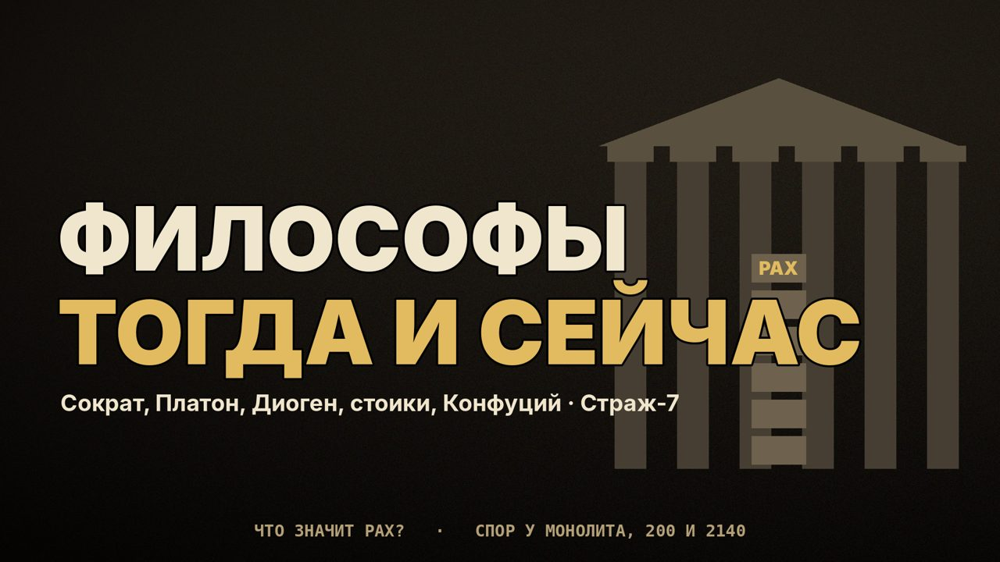
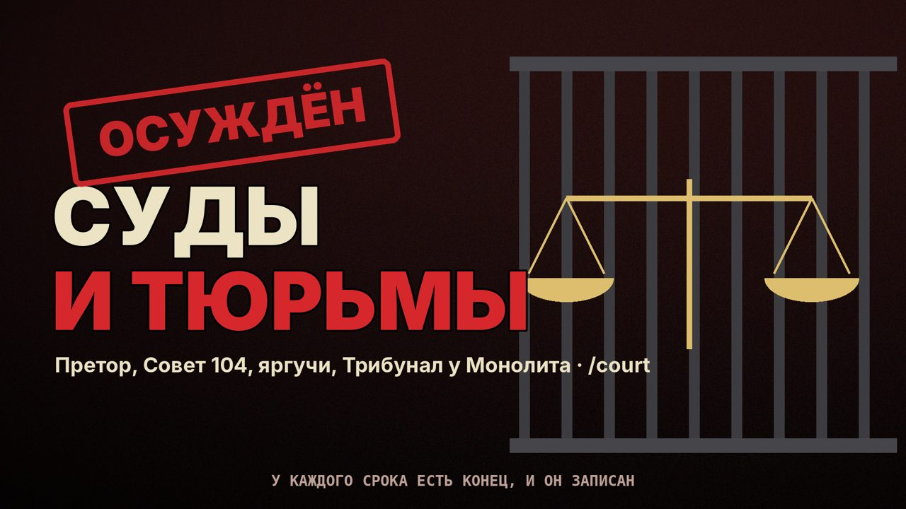

Read in order: Forerunners → Middle Ages → Late Ages (the future of the world: from the robots of 1962 to the Moon, Mars and the stars). Cataclysms is a separate chronicle.

What came before Romulus

Chronicle of the Romuli, years 0–1962

After 1962: robots and AI, cyberpunk, the Interserver War, the Moon, Mars, the Dyson sphere, the stars and the end of time

Mongolia, China, Japan, America and the USSR in the chronicle: the Great Steppe Horde and Temir Khan, the Middle Empire, the Yamato Shogunate, the Federation of the New World, the Union of Soviet Steppe Republics (in Russian)

Chronicle of the Monolith

Three recordings from the Far Sector, 5000 blocks from 0, 0

Prologue to the Front Chronicle: the world before this world, server ZAG533, Day 517

Sages of the eight peoples modelled on Socrates, Plato, Diogenes, the Stoics, Confucius and Laozi (Russian text)

Gods of the eight peoples and the Keepers of the Seal. Faith gives bonuses: /faith and state faith in focuses (Russian text)

From the praetor to the Tribunal at the Monolith, and how courts work on the server: /court (Russian text)
Every focus, heritage, race and people, what to take before the war, ready-made builds